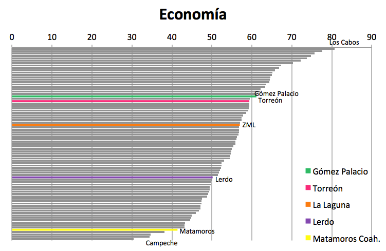
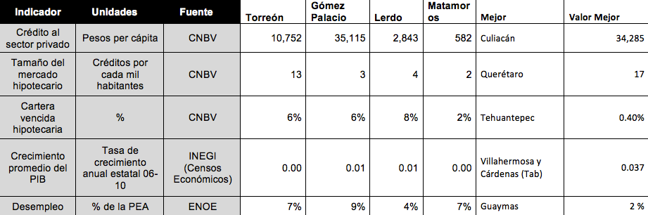

Las variables macroeconómicas locales son registradas en ICU por este subíndice en el cual la ZML ocupa el lugar 31, mientras los municipios de Gómez Palacio y Torreón ocuparían por si solos las posiciones 21 y 22 respectivamente. Lerdo se encuentra por debajo de la media de ciudades en la posición 52 y Matamoros en la 73, reflejando el tamaño del mercado hipotecario y de crédito en cada municipio, así como la producción entre otros indicadores.
La información proveniente de la Comisión Nacional Bancaría y de Valores es fuente fundamental de información para este subíndice. El crédito al sector primado para la ZML representa $ 15,510 pesos por habitante ocupando el octavo puesto nacional, solo por debajo de Culiacán, Valle de México, Monterrey, Tampico-Pánuco, Cancún, Ciudad del Carmen y Chihuahua. Sin embargo destaca que Gómez Palacio, por si solo ocuparía el primer lugar nacional con otorgamiento de crédito de $35,115, pesos per cápita, y Torreón a pesar de promediar una cifra considerablemente menor ocuparía también un lugar muy por encima de la media en el lugar 11.
En cuanto al tamaño hipotecario representado por los créditos por cada mil habitantes, la ZML se encuentra en competitividad media, mientras Torreón ocuparía el lugar 10 por sí solo.
Ya que sólo cuentan con aproximaciones del PIB municipal, la tasa de crecimiento del PIB estatal nos da una idea del crecimiento de los municipios, indicador en el que la ZML ocupa el lugar 66, con una tasa de 0.0044. Dicha tasa fue obtenida del promedio de los estados de Coahuila y Durango, los cuales crecieron 0.0027 y 0.0086 respectivamente. Con una tasa de 0.037 Tabasco es el estado con mayor tasa de crecimiento, por lo que tanto el municipio de Cárdenas como Villahermosa tienen los mejores resultados del indicador.
Por último, en el tema de desempleo la ZML se ubica el lugar 58, siendo desempleados el 7.5% de la PEA. Dentro de la Zona Metropolitana el municipio con menor tasa de desempleo es Lerdo, con 4.4% de la PEA. A nivel nacional, la menor tasa de desempleo es de 2.06% en la zona metropolitana de Guaymas, Sonora.